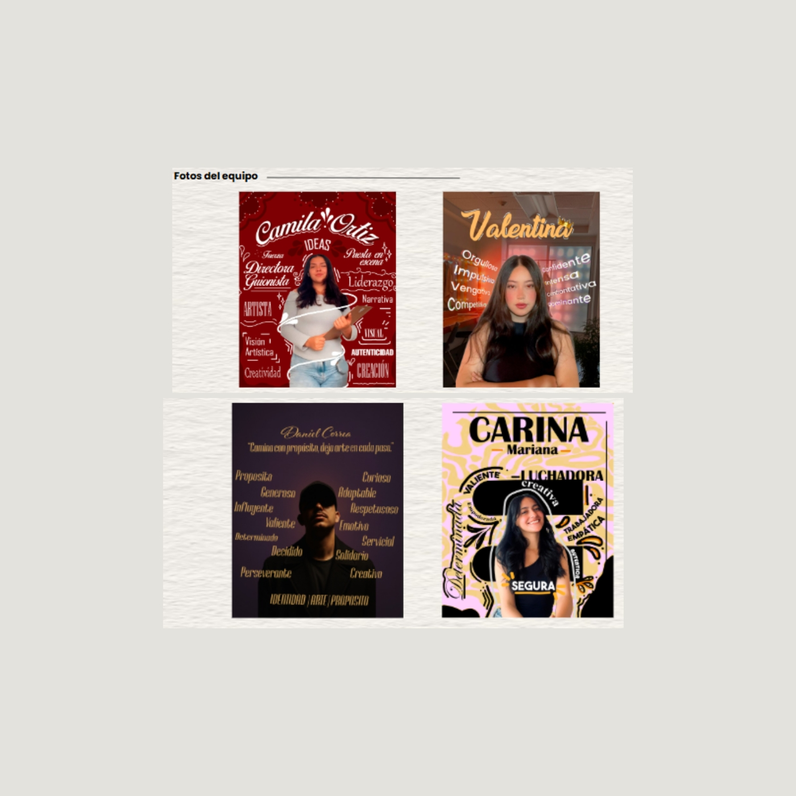
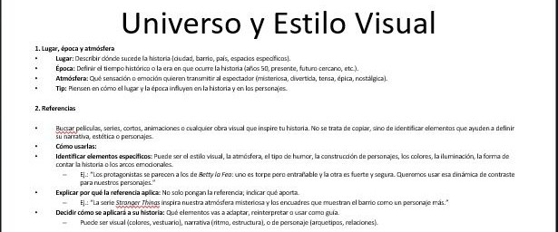
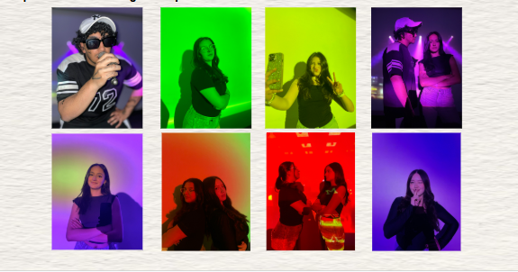

Caso de proyecto
Vertical drama
Proyecto de estudio de creación enfocado en producir desde cero una serie, teniendo en cuenta la narrativa visual y la creación de una producción.

Caso de proyecto
Proyecto de estudio de creación enfocado en producir desde cero una serie, teniendo en cuenta la narrativa visual y la creación de una producción.
El reto del proyecto Dako fue crear una historia visual que conectara con el público a través del misterio y el drama. El objetivo era construir un universo narrativo atractivo, con personajes claros y una estética visual que transmitiera emoción y curiosidad desde el primer momento.
La interfaz anterior no conectaba con la audiencia ni transmitía claramente el valor de la marca.
"Dako es una exploración creativa del storytelling visual, donde el misterio y los personajes construyen una narrativa envolvente."
Desarrollé el concepto creativo de la serie, definiendo la historia, los personajes y el estilo visual del proyecto. Se trabajó en la construcción del mundo narrativo, la identidad de los personajes y la planificación de escenas para lograr una experiencia audiovisual coherente.
El resultado fue la creación del proyecto Dako, una propuesta de storytelling visual que combina narrativa, dirección creativa y desarrollo conceptual. El proyecto permitió explorar la creación de universos narrativos y fortalecer habilidades en desarrollo creativo y construcción de historias.
El proyecto Dako permitió mejorar la experiencia visual y la claridad narrativa del concepto, logrando una conexión más fuerte con el público y una presentación más sólida del universo del proyecto.
Mayor interés visual
Más claridad en la narrativa
Valoración del concepto
Desde investigación hasta diseño final.

El proyecto comenzó con la construcción del concepto narrativo y la definición de los personajes principales.

Luego se desarrolló la estética visual del universo de Dako, explorando referencias visuales, composición y estilo gráfico.

Finalmente se diseñaron las piezas visuales del proyecto buscando transmitir el tono misterioso y emocional de la historia.
Hablemos de tu próximo proyecto.
📧 dannavalentina0719@gmail.com
📍 Colombia